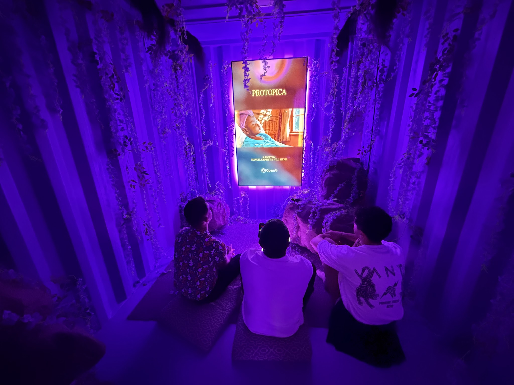
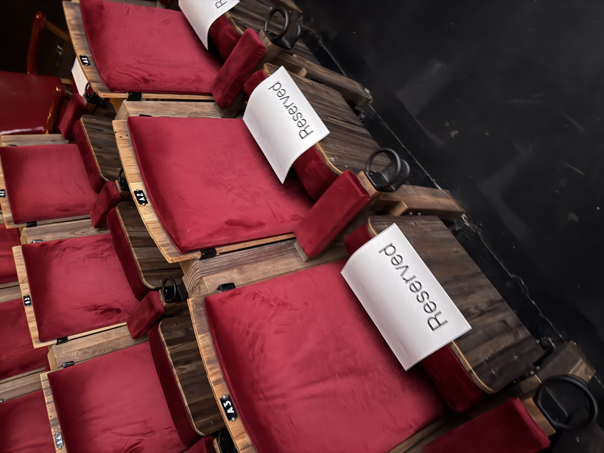

Creative direction / cultural AI
Manuel Sainsily
XR, BCI, haptics, education, design systems and cultural worldbuilding.
PROTOPICA
About
Protopica brings together creative direction, immersive media, cultural AI, opera, education and public programming.
Creative direction / cultural AI
XR, BCI, haptics, education, design systems and cultural worldbuilding.
Immersive media / spatial worlds
Participatory experiences, spatial storytelling and Caribbean futures.

Founding artistic director
XR production, opera, creative technology and cultural programming.
Exhibitions / Installations

NYC / 2025-10-09 - Present
A 270-degree immersive 3D ocean world with spatial audio surrounding visitors with a Caribbean future.

Barcelona / 2025-06-12
An EEG-driven installation where mental state shaped the visuals in real time.

Vancouver / 2024-09-27
Protopica expanded from GenAI cinema into an immersive platform rooted in cultural world-building.

NYC / 2024-07 - 2025-02
First OpenAI artists to release an AI film screened at the Metrograph Theatre.
Services
Creative technology strategy for AI, 3D, spatial computing, design systems and cultural platforms.
University lectures and workshops that turn emerging technology into creative confidence.
Keynotes, panels and live demos on AI, XR, BCI, haptics, design and cultural preservation.
Community-validated workflows for language, memory, diaspora, oral history and living archives.
Access programs that put immersive tools in the hands of children, patients and communities.